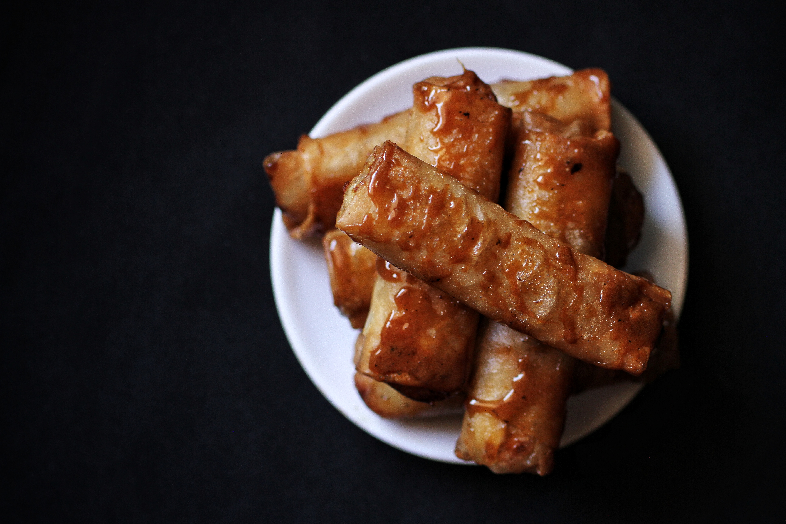

Home
Turon Recipe

Description
Turón is a Philippine snack made of thinly-sliced bananas rolled in a spring roll wrapper,
fried until the wrapper is crisp, and coated with caramelized brown sugar.
Ingredients
- Saba bananas
- Ripe jackfruit (langka)
- Brown sugar
- Lumpia wrappers (spring roll wrappers)
- Cooking oil
- Water or cornstarch slurry
Steps
- Roll each saba banana piece in brown sugar until it is completely coated.
- Assemble the filling: Place a sugared banana piece flat on a lumpia wrapper. Add a small strip of jackfruit right on top of or beside the banana.
- Wrap securely: Fold the bottom corner of the wrapper over the filling, fold in the left and right sides tightly, and roll forward. Dab a little water or egg wash on the final top corner to seal the wrapper shut.
- Heat the oil: Pour enough neutral cooking oil into a pan or skillet to shallow-fry or deep-fry. Heat it over medium heat to about 350°F (177°C).
- Fry the turon: Carefully place the wrapped turon in the hot oil in a single layer without overcrowding. Fry for about 3 to 5 minutes, turning occasionally, until the wrapper turns a rich golden brown and the sugar caramelizes.
- Drain and cool: Remove the cooked turon using tongs. Place them on a wire cooling rack instead of paper towels so the caramel doesn't stick and get soggy. Let them cool for about 5 minutes before eating.